My second week was hectic – not only was I traveling for the weekend, my phone broke Thursday night, making documentation very difficult. This week were assigned to make a press fit construction kit. I had several ideas of things I wanted to make including:
- An Eiffel Tower
- A plant/flower of some sort
- Something Valentine’s day related
- A flexible self-intersecting single-piece kit
- Animal bookshelf (inspired by this)
- Bitmap art for my wall
- Bookends for my bookshelf
- A geodesic dome
My strongest interest was in the geodesic domes. The structure of these domes are similar to that of an icosahedron but more closely approximate a sphere. They were developed by Buckminster Fuller, who I am interested in for his work in design and architecture, his profuse record keeping, and his neologism like “tensegrity,” “synergy,” and “world-around”. Making a dome with the laser cutter seemed particularly challenging and appealing to me because of the non-orthogonal geometry of the faces. Most of the other projects I had seen when browsing consisted only of pieces meeting at right angles. You may have seen geodesic domes on playgrounds or in architectural structures:
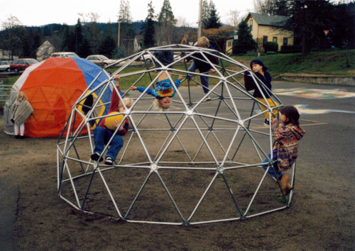
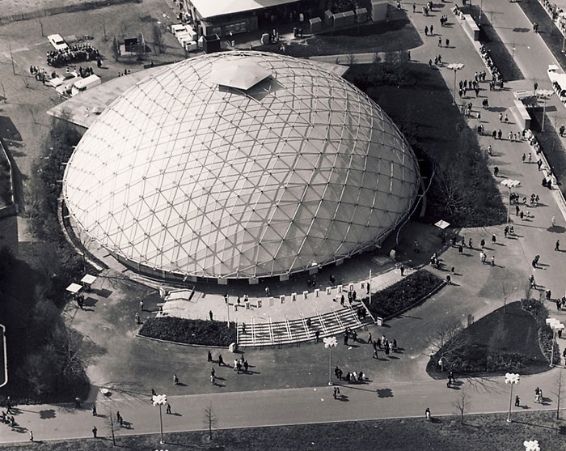
Given that the angles in these structures are highly mathematical and complex to calculate by hand, I consulted the internet to see if anybody had made large geodesics in programs like fusion. I found one student who had made a geodesic lamp in a previous iteration of the fab-lab course at MIT. The final product looked like this:
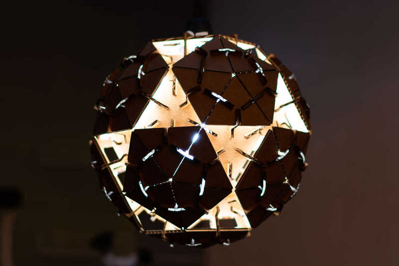
and the student ended with a comment that in a future iteration, he would turn the pentagonal panels outwards to allow more light to escape.
I planned to start with a geodesic dome and hopefully find a way to invert these pentagonal structures. From this site I also found several resources on how to construct appropriate angles. The most helpful of these was a book that contained numerous types of geodesic dome structures (even elliptical domes!!). In the book I found a diagram with method of construction for a frequency 2 geodesic dome (an icosahedron is a frequency 1 geodesic dome):
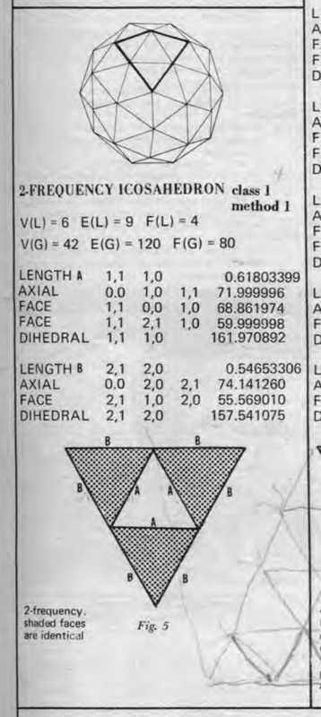
This diagram indicates that there will be 80 total faces in the figure and the lower triangles along with the measurements above indicate the relative sizes of edges in the dome and the angles between faces, or dihedral angles.
With this information, I set out to create this structure in Fusion 360. I entered the measurements above as parameters in case I needed to adjust them later. I started by making sketches of each component. I needed one piece for the equilateral triangle in the center, and one piece for the isosceles triangles around it. I would also need connecting pieces at the edges. Note that there are two different dihedral angles depending on the faces the angle is between so I will need two types of connecting pieces. The design for my pieces is below:
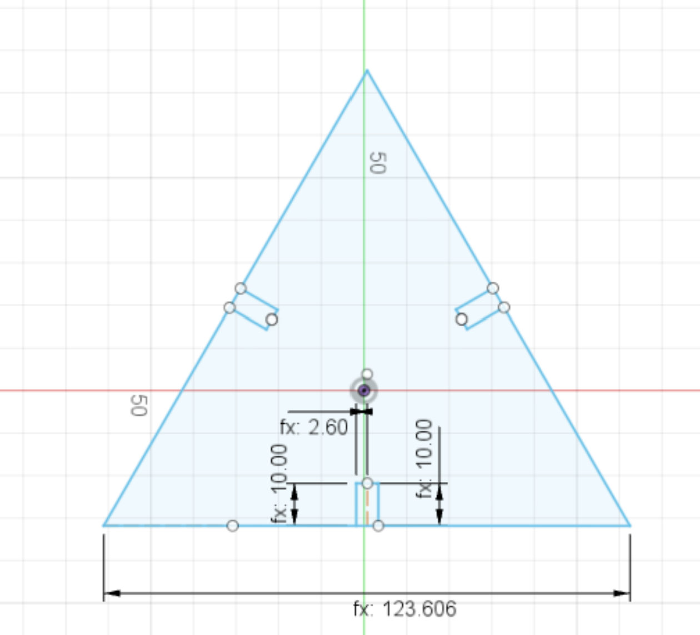 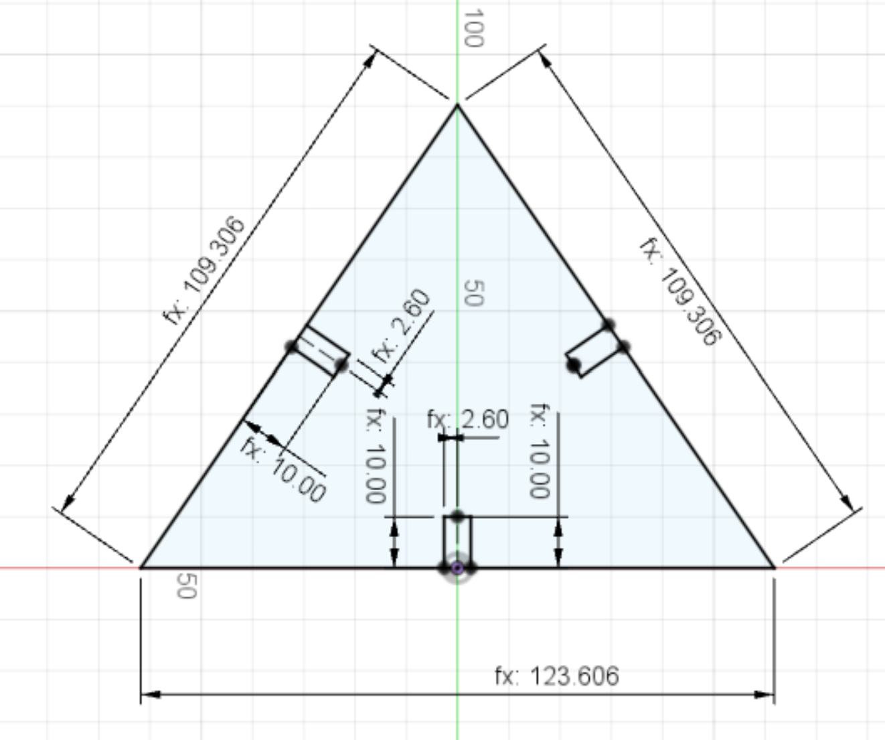 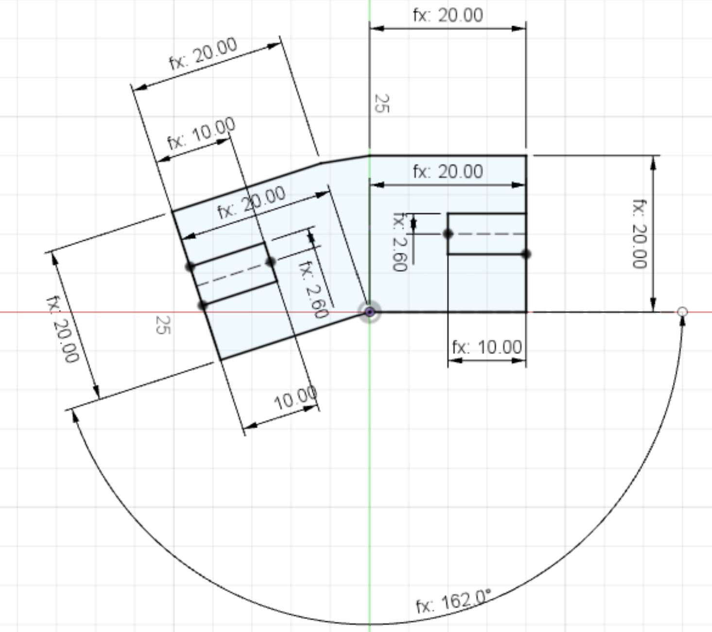 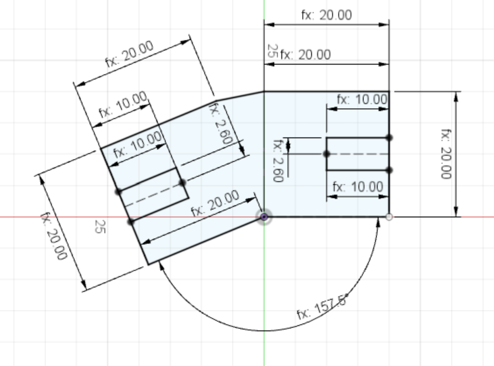
After making these sketches, I was able to turn them into bodies by extrusion. My first confusion with Fusion 360 arose at this point. I was very comfortable with the 2D sketches, where I learned about constraints and dimensions. In 3 dimensions, however, I now had to combine the pieces I’d made in non-orthogonal ways. Before that, I would have to duplicate the pieces and find a way to put them together at all.
I found a feature in Fusion called components, which allowed me to “assemble” pieces using joints. While the difference between components and bodies was not clear to me at first, Nathan explained that components act as containers for bodies and have several additional features, including the ability to add joints between components that hold them together, and to make rigid groups of components that stay together. After a long journey to discover this, I still had difficulty moving copied components around independently. Every time I copied a component and tried to translate it, all of the other components would be translated by the same amount. What I wanted was a set of components that were tied to the same body (so that if I changed the user parameters the shape of the components would all change) but that were positionally distinct. The feature that eventually resolved this for me was the “Paste New” feature, which provided exactly this functionality.
Two other features that were helpful in assembling the shape were the align function and the point to point translation function. The first allowed me to align two faces of different components in the same plane before moving their slots together and the second allowed me to move the slots of connected components to the exact same point.
Though I was able to (almost) put together a pentagon, it was a very difficult and slow process.
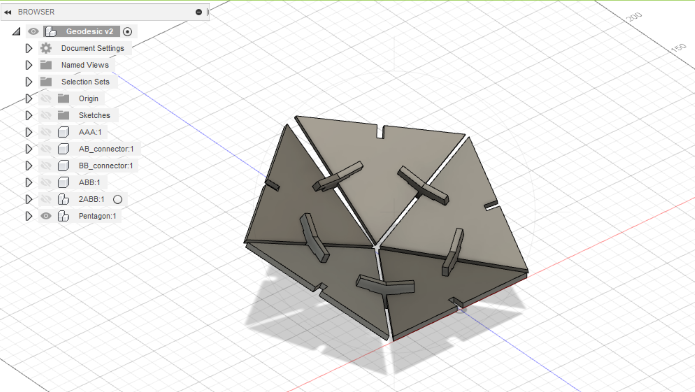
Because I did not return from my travels until Tuesday and had worked a few hours with no end in sight, I decided to turn to an easier project first.
A simpler project I had thought of was a flexible, self-intersecting, single-piece kit. I was inspired by some of the pieces I had seen in the lab that had many little cuts and allowed flexion of the cardboard. I wondered what these pieces would look like if instead of tiny cuts, the cutouts were full slots that could be used to connect pieces of the cardboard to itself. After sketching out a design, I got to work in fusion. To give you an idea of the piece I was imagining, here is the final product:
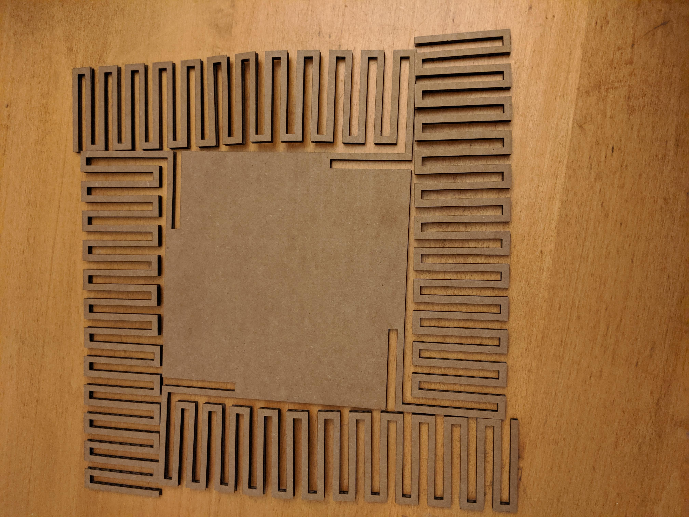
To make the design parametric, I wanted a variable number of slots in each “wing” of this piece. I also wanted to be able to control how deep the slots of the wings were, how deep the slots in the centers were, and how thick the squiggles in the wings were. I had many parameters by the time I’d added these and other convenient parameters to Fusion:
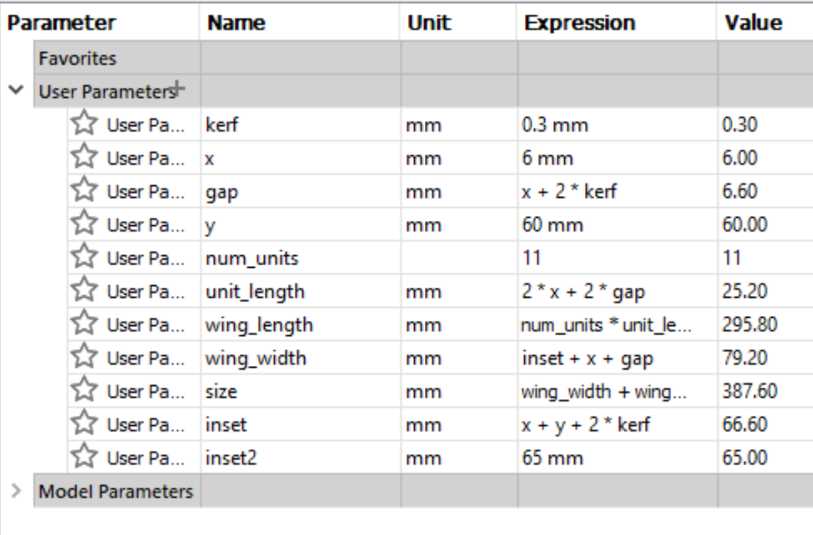
I planned to make the sketch by first constructing one “squiggle” and then using the rectangular pattern feature to extend it num_units times.This would create a single wing that I could then rotate with the circular pattern feature. After this was done I could extrude and project to get the final product. Unfortunately it was not this simple. After making a squiggle and using the rectangular pattern feature I had a result that looked like this:
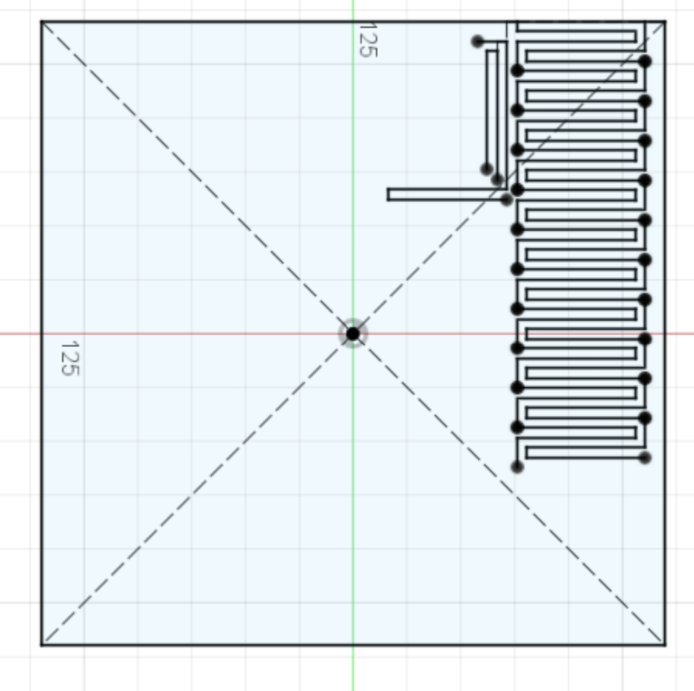 After the circular pattern, things looked good:
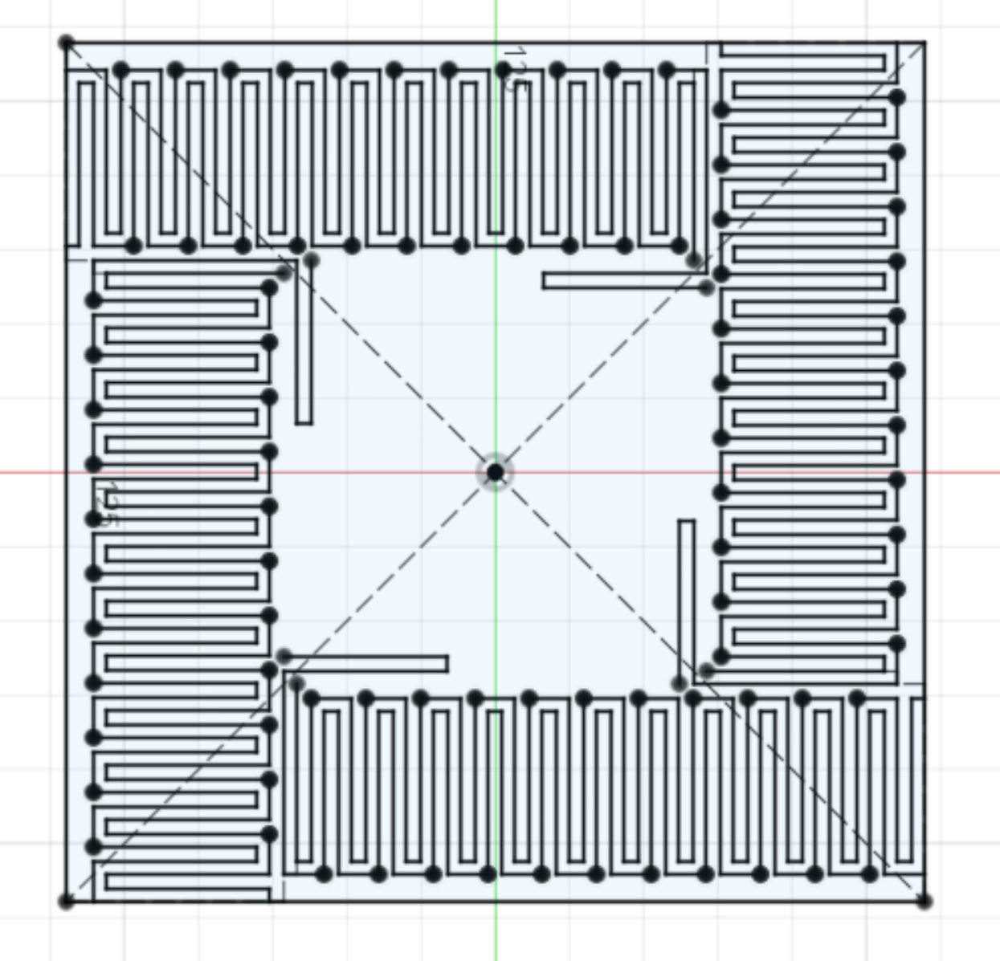
This was actually deceiving, though. When I changed the number of units that I had, the original rectangular pattern updated, but the circular pattern copies did not:
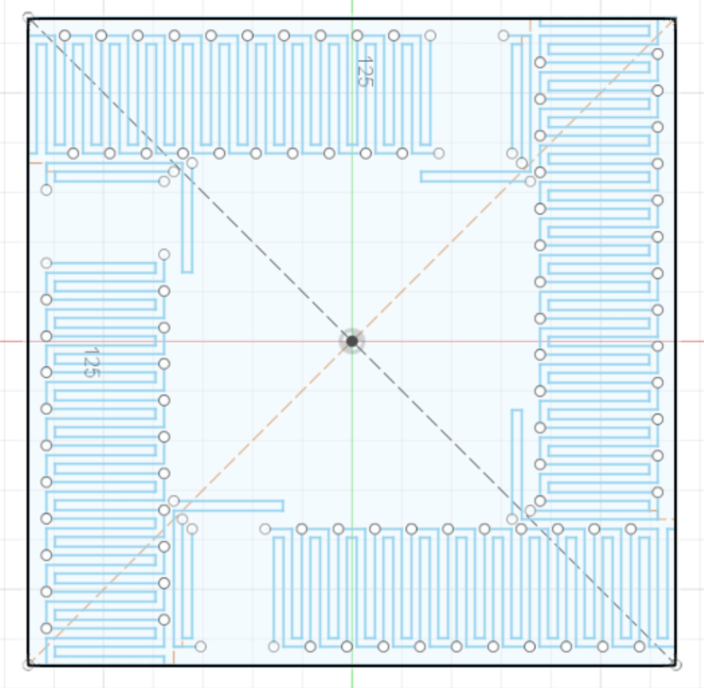
Note also that the lines became blue. I learned that in Fusion, if an object does not have enough constraints to uniquely determine its position, then it is in blue, while if it has enough it appears in black. This transition from constrained to unconstrained was very bad. It meant that when I changed the number of units, it lost track of where everything was supposed to be. After some Googling, I found no solution to this problem. Instead, I tried another approach that seemed a little more work intensive. Rather than doing the rectangular pattern first, I did the circular pattern first and then the rectangular pattern four times, in hopes that updating a parameter after this would update all four patterns.

This is what the sketch looked like after my rotation in this case. Using the rectangular pattern 4 times did in fact allow me to update the number of units on all sides at once. Unfortunately, the sketch lines still turned blue, meaning the system was unconstrained after changing one parameter. This also occurred if I changed the parameter x (thickness of the squiggles). I’m still not sure why this happened but hypothesize that it could be a limitation of the rectangular pattern feature of fusion. I used a variable (num_units) to specify the number of repetitions, and also used a variable (unit_length) to specify how far apart to space the units. Whenever I changed a parameter related to these quantities, the figure lines seemed to become unconstrained. Despite being unable to resolve this problem, I was able to laser cut an example by setting the parameters for number of units beforehand, this allowed me to play with the edge thickness one time before the system became unconstrained.
My first iteration had 7 squiggles and an edge thickness of 4.3mm. When I tried to join this piece to itself, the edge was too thin and bent:
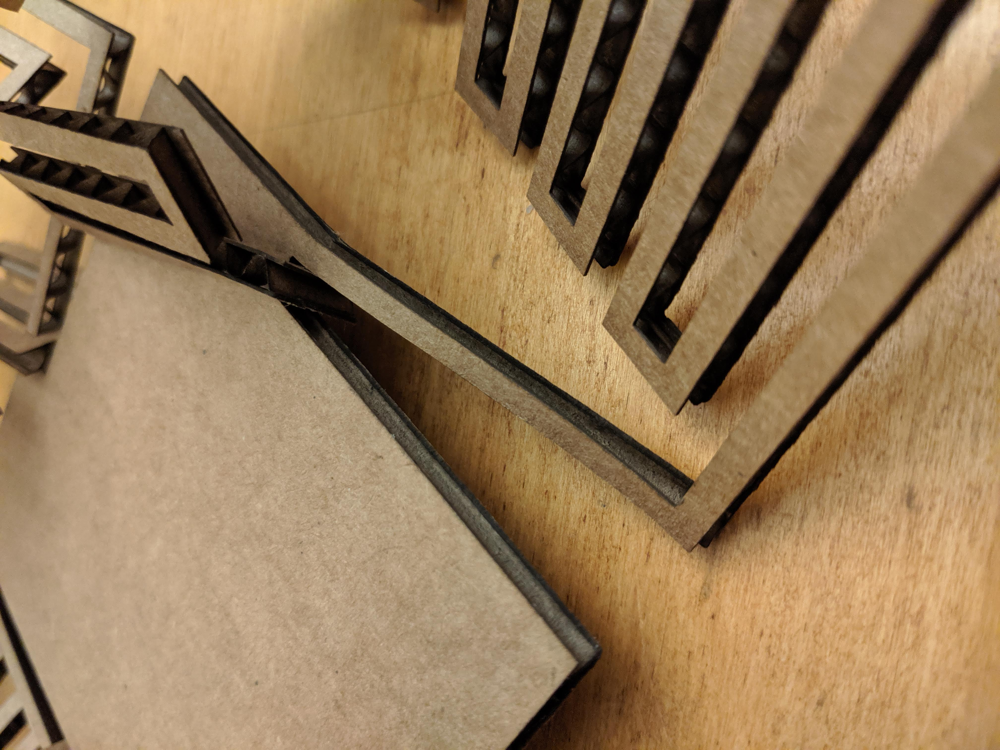
For a second iteration, I made the edge a little thicker (6mm) and increased the number of slots to 11. This iteration fit together better and did not distort the cardboard in the process. I was able to fold the piece in several ways, some of my favorites are shown here:
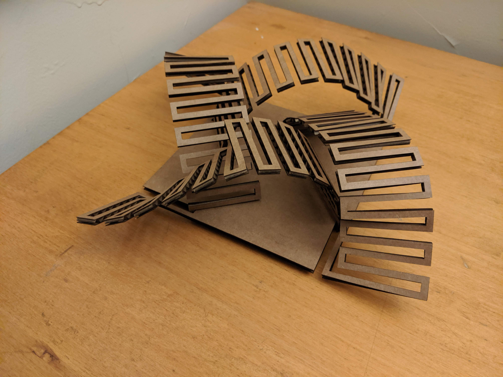 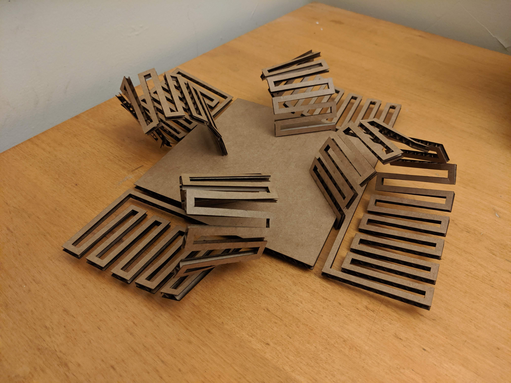 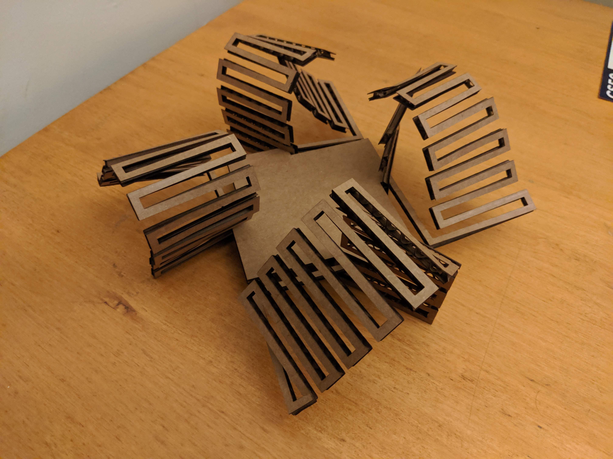
I hope to have a chance to better document the actual cutting process soon now that I have a new phone(!!). I also am continuing to work on the icosahedron as I learn more about fusion.